Quick Start Guide
Independent Project Notice: StepCat is an independent calculator for personal payout estimates. It is not affiliated with, endorsed by, or sponsored by any challenge platform. Results are estimates based on user-entered information.
Live App URL: https://gatorball345-ux.github.io/StepCat-Profit-Calculator-/
StepCat title screen.
StepCat is an independent calculator for personal payout estimates. It is not affiliated with, endorsed by, or sponsored by any challenge platform. Results are estimates based on user-entered information.
If a link does not open from Word, copy and paste the full URL into your browser.
Choose Member or Non-Member. The Math Info drawer changes with the game type.
Non-Member: a 15% platform fee is withheld; eligible players split 85%.
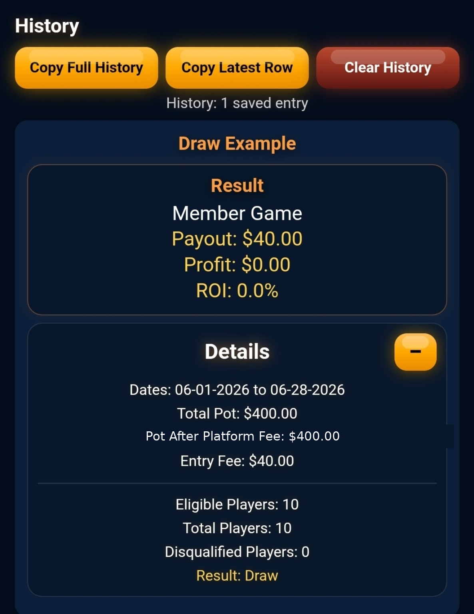
Member: no platform fee is removed; eligible players split the full pot.
Profit: payout is above Entry Fee.
Draw: eligible player receives the Entry Fee back.
Loss: only applies if the player is disqualified and forfeits the Entry Fee.
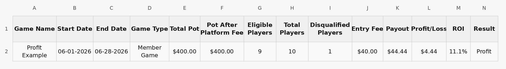
Required Fields: Total Pot, Entry Fee, Eligible Players, and Total Players.
Optional Details are used for labels, dates, and spreadsheet history.
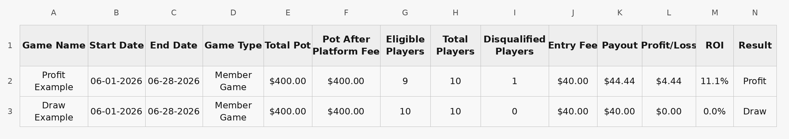
Optional Details: game name, start date, end date, and history organization.
Tap Calculate after entering the required fields.
Total Pot: full challenge pot before payouts.
Entry Fee: actual amount paid to join.
Eligible Players: players still eligible for payout.
Total Players: everyone who entered the challenge.
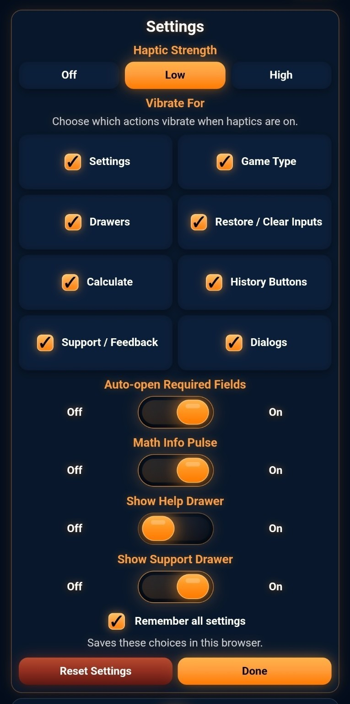
Member Game: Payout = Total Pot ÷ Eligible Players.
Member Game: Profit = Payout − Entry Fee.
Member Game: ROI = Profit ÷ Entry Fee × 100.
Non-Member Game: Pot After Fee = Total Pot × 85%.
Non-Member Game: Payout = Pot After Fee ÷ Eligible Players.
Non-Member Game: Profit = Payout − Entry Fee.
Profit Example: the payout is above Entry Fee.
$400 ÷ 9 = $44.44 payout. Profit: $4.44. ROI: 11.1%.
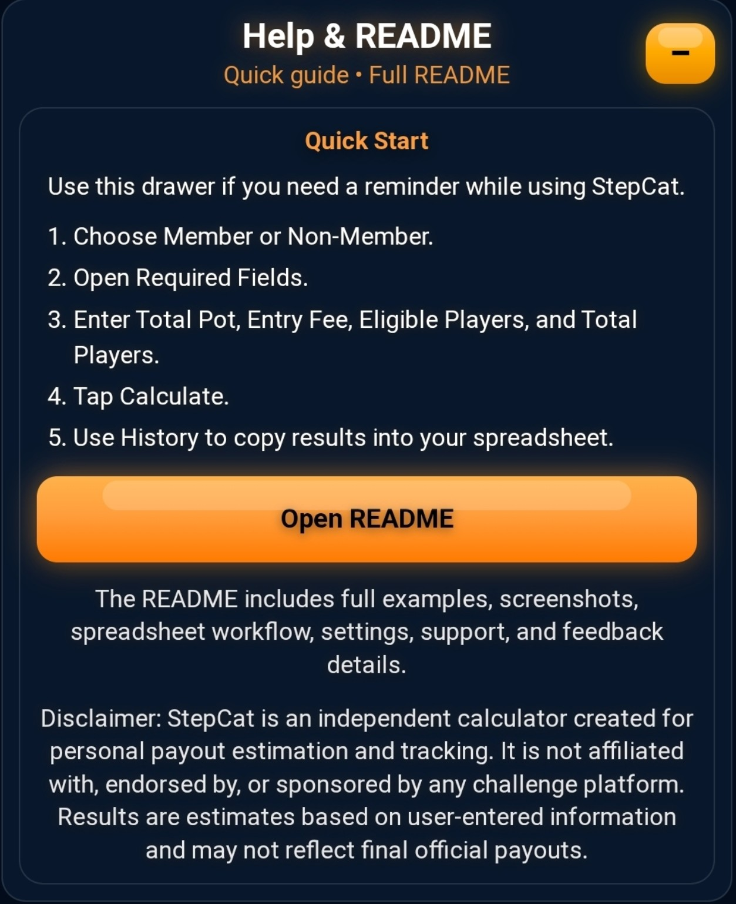
Draw Example: the payout equals Entry Fee.
$400 ÷ 10 = $40.00 payout. Profit: $0.00. ROI: 0.0%.
If the raw eligible share is below Entry Fee, StepCat still shows a Draw for eligible players.
Final Payout = Entry Fee.
Profit = $0.00.
ROI = 0.0%.
Pot-Funded Break-Even: break-even eligible players = Pot After Fee ÷ Entry Fee.
Example: $9,945 ÷ $100 = 99.45, so 99 eligible players or fewer reaches pot math break-even.
A true loss happens when the player is disqualified and must forfeit their Entry Fee. StepCat focuses on projected payout for eligible players.
History saves calculations and provides Copy Full History, Copy Latest Row, and Clear History.
Copy Full History: create or replace a spreadsheet with headers.
Copy Latest Row: append only the newest saved result.
Spreadsheet screenshots are wide. Rotate your phone or zoom in if needed.
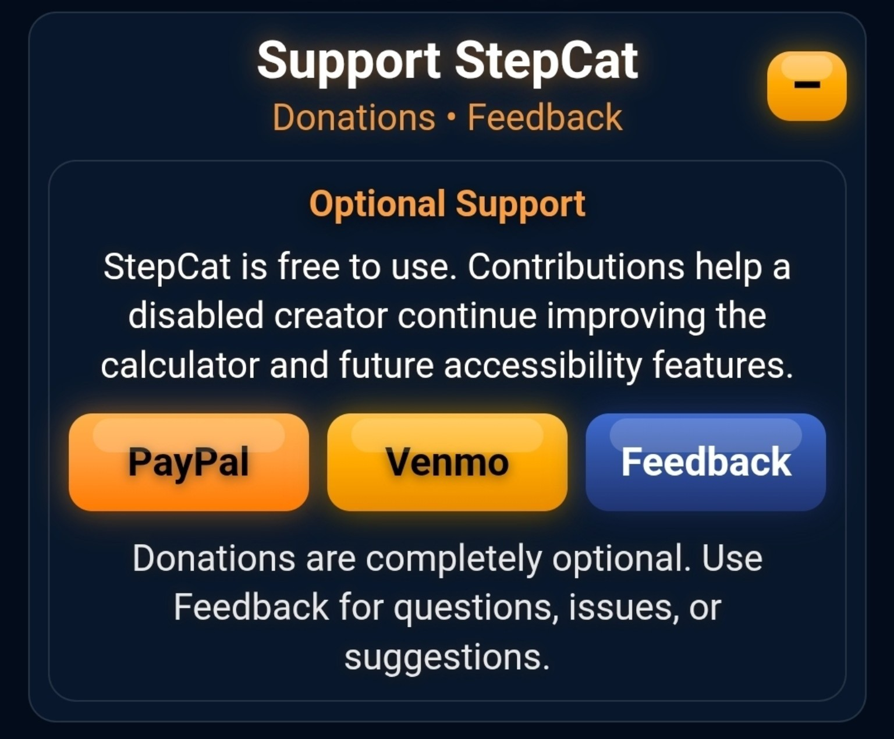
Copy Full History sets up or replaces the sheet with headers.
Copy Latest Row appends only the newest saved calculation.
Columns include game name, dates, game type, pot, players, payout, profit/loss, ROI, and result.
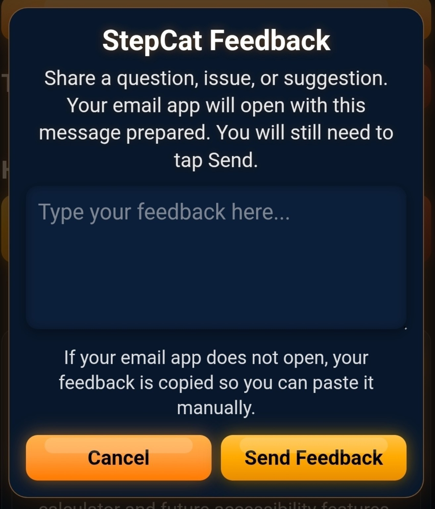
Settings controls haptics, drawer visibility, remembered settings, and reset.
Help & README gives a quick reminder and a link to the full README.
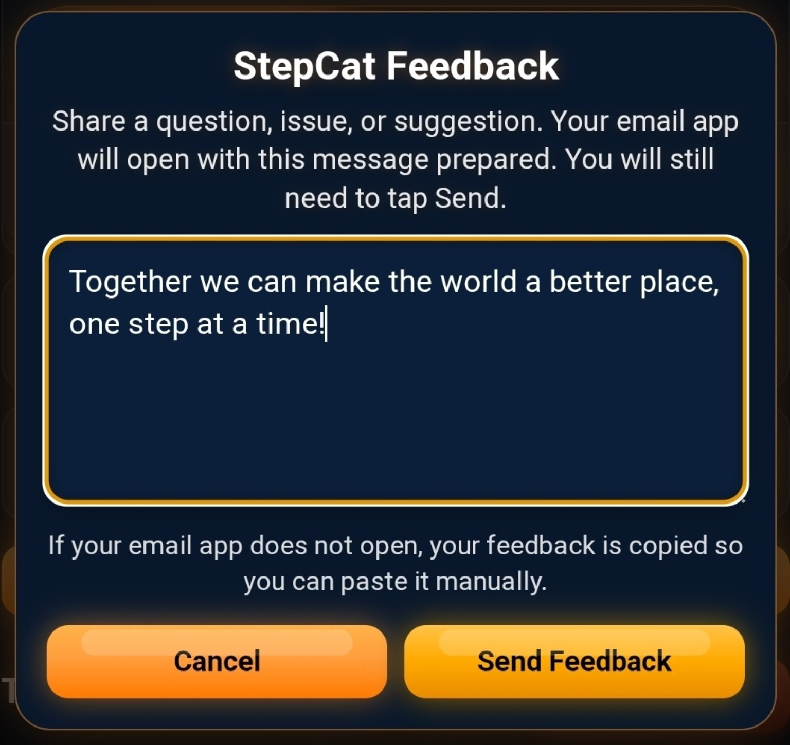
Help & README: quick reminder and a link to the full README.
Support StepCat provides optional PayPal, Venmo, and Feedback buttons.
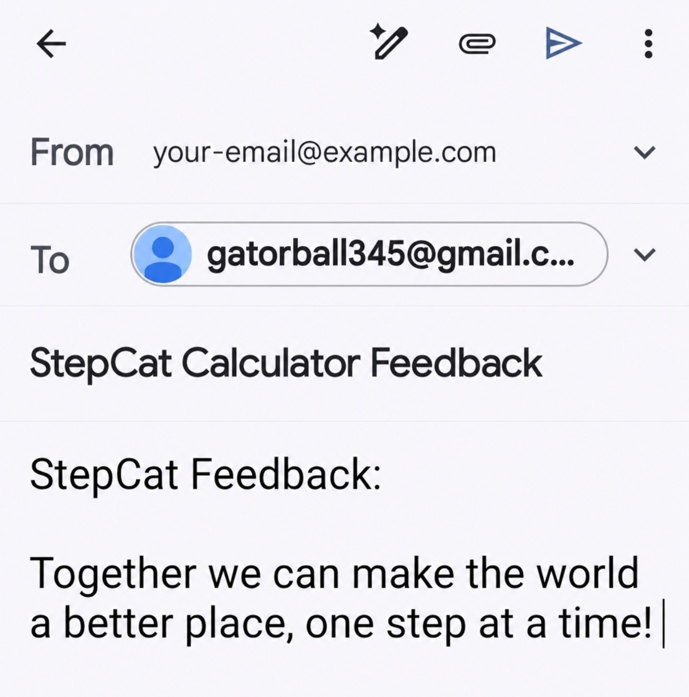
Support StepCat drawer open with optional support and feedback options.
Donations are optional. Contributions are personal support, not tax-deductible charitable donations.
Feedback opens a prepared email draft. You still need to tap Send in your email app.
Feedback pop-up before typing.
Feedback pop-up with typed feedback.
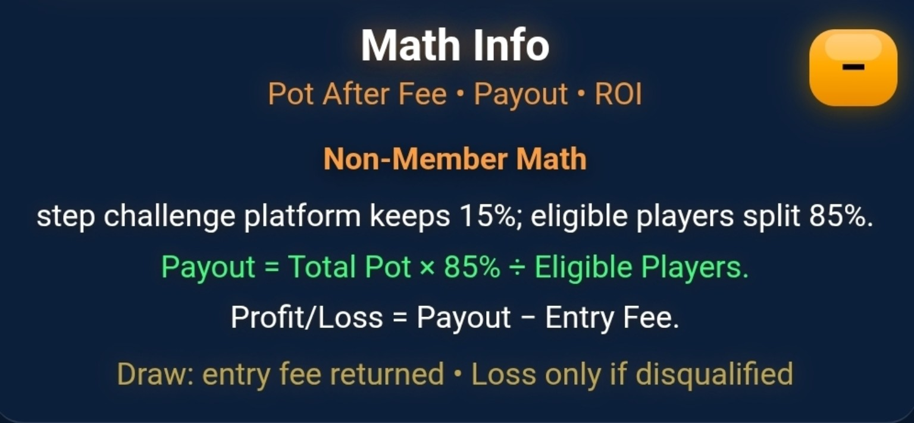
Prepared email draft opened from StepCat feedback.
History and settings are saved locally in the browser.
StepCat does not require an account and does not send saved history to a server.
Clearing browser data may remove saved history and settings.
StepCat is a simple estimating tool. Use official challenge information when entering pot, Entry Fee, and player counts. Final official payouts may differ from estimates.
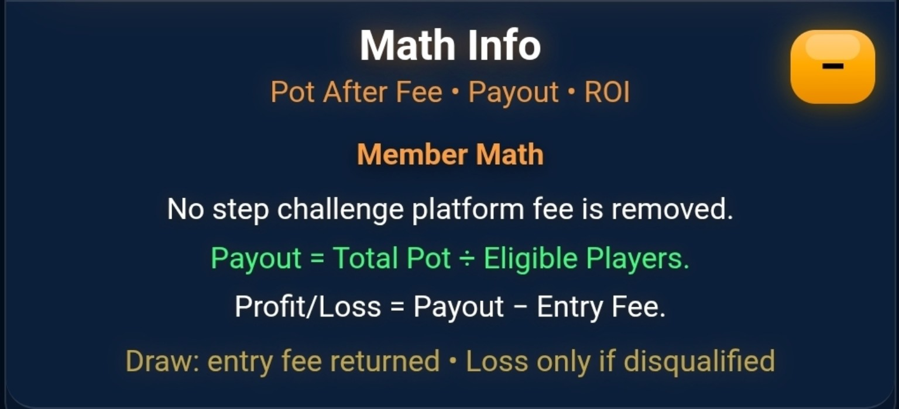